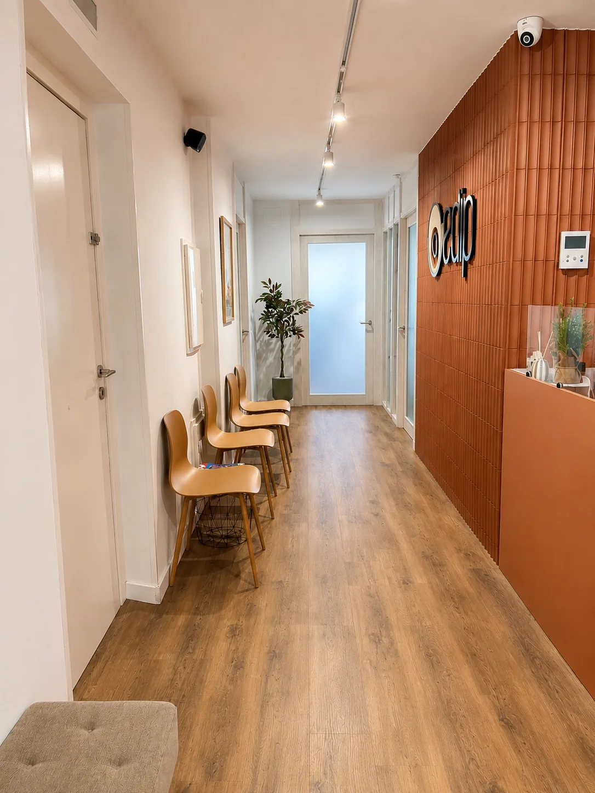
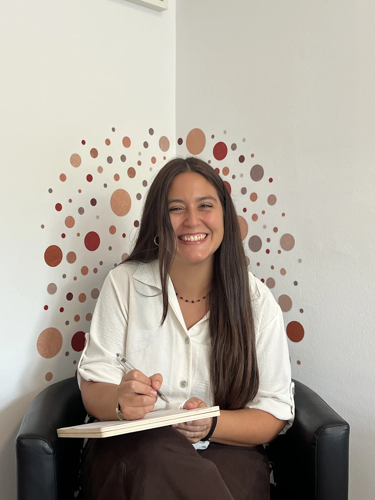

Psicologia d’adults
Ansietat, estrès, estat d’ànim, autoestima, dol, trauma, canvis vitals i altres situacions que generen malestar emocional.
Veure el serveiAcompanyem infants, adolescents, adults i famílies amb psicologia, pedagogia, reeducacions i logopèdia, des d’una mirada professional, propera i adaptada a cada procés.

No cal conèixer cap diagnòstic ni tenir clar el tipus de teràpia. Pots començar pel que més s’assembla a la teva situació.
Treballem des de diferents àrees per poder orientar cada persona cap a l’acompanyament més adequat.
Ansietat, estrès, estat d’ànim, autoestima, dol, trauma, canvis vitals i altres situacions que generen malestar emocional.
Veure el serveiAcompanyament a infants, adolescents i famílies davant dificultats emocionals, relacionals, conductuals o del desenvolupament.
Veure el serveiIntervenció educativa personalitzada en dificultats d’aprenentatge, TDAH, dislèxia, hàbits d’estudi, motivació i autonomia.
Veure el serveiAvaluació i intervenció en llenguatge, parla, veu, comunicació, lectoescriptura i deglució.
Veure el serveiUn espai per comprendre patrons relacionals, millorar la comunicació i abordar dificultats familiars o de parella.
Veure el serveiXerrades, tallers i activitats per a famílies, centres educatius, professionals i altres col·lectius.
Veure el servei
Judith Faura és psicòloga general sanitària, col·legiada núm. 29689 i directora del Centre EDIP.
L’objectiu no és aplicar una fórmula estàndard, sinó entendre la persona, el seu moment vital i el context que l’envolta per definir un procés amb sentit.
Des del primer contacte, expliquem cada pas amb claredat perquè puguis decidir amb tranquil·litat.
Ens escrius o truques. Ens expliques només el necessari per orientar la consulta i resoldre els primers dubtes.
Escoltem el motiu de consulta i fem una primera valoració professional.
Definim objectius i proposem l’enfocament, la freqüència i el servei més adequats.
Revisem l’evolució i adaptem el procés quan cal, respectant el ritme de cada persona.
Al centre de Tàrrega, amb sales diferenciades per a adults, infants, famílies i activitats grupals.


Llegeix les experiències compartides a Google per les persones que ens han visitat.
Plaça del Carme, 17, Entresol 1a · 25300 Tàrrega, Lleida
S’obrirà Google Maps en una pestanya nova.
Les ressenyes es carreguen automàticament des de Google. Google rep la teva adreça IP i dades tècniques del navegador i pot utilitzar cookies segons la seva política de privacitat.
Les ressenyes de Google es mostraran en aquest espai.
Respostes clares a dubtes habituals abans de demanar una primera visita.
Veure totes les preguntes →Si tens dubtes, escriu-nos. Podem orientar-te sobre el servei i explicar-te com seria una primera visita.